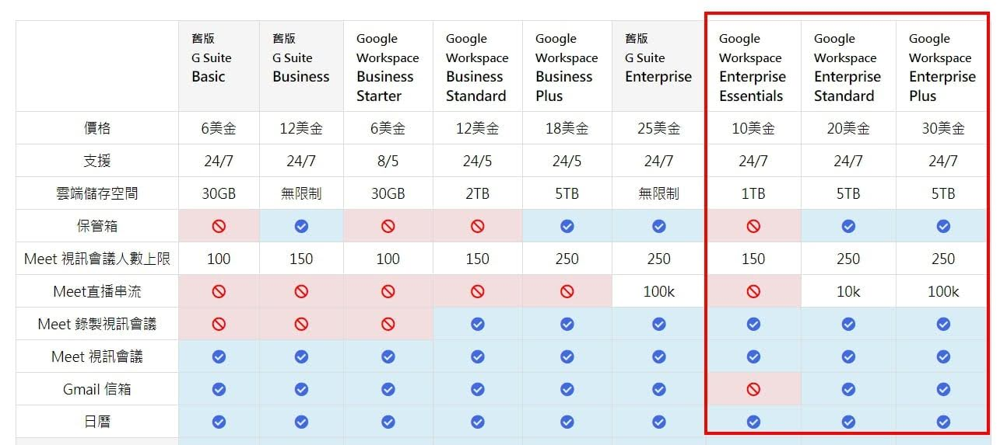
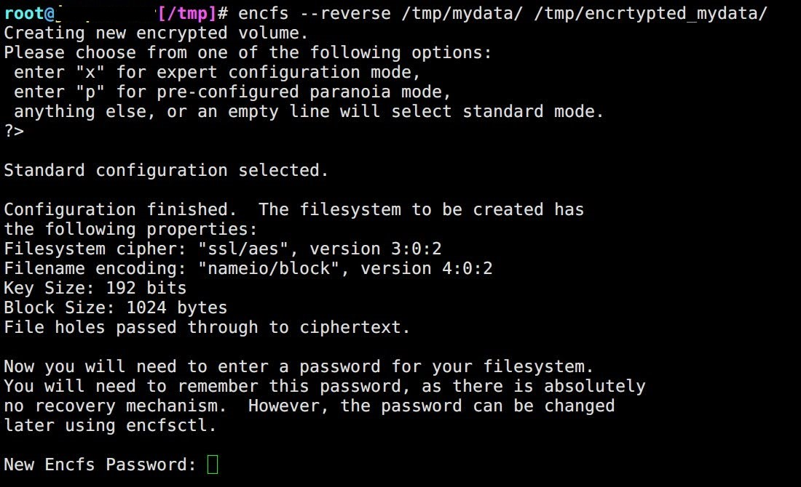
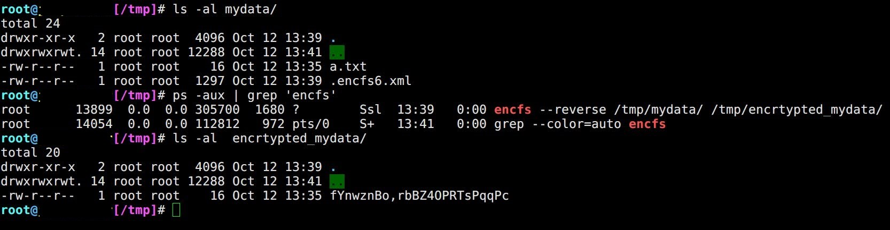
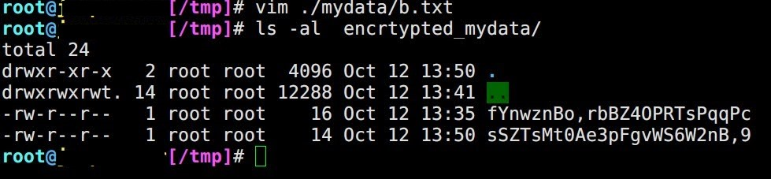
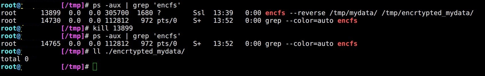
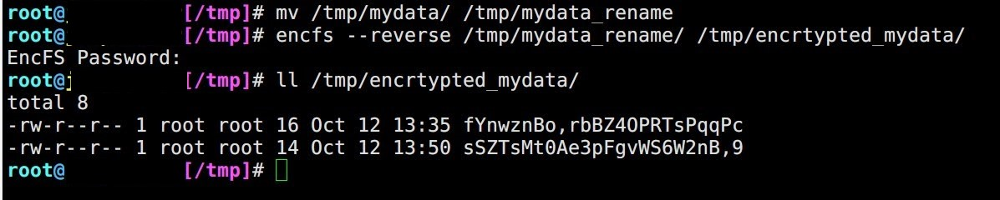
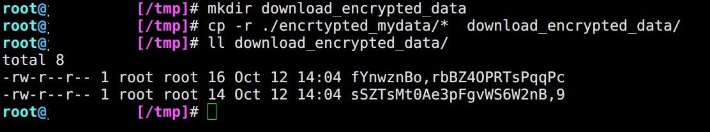
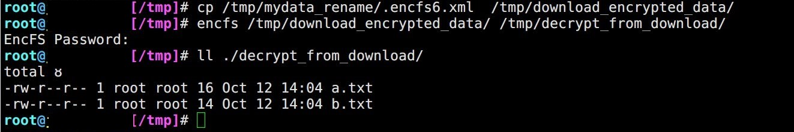

EncFS + Rclone 公有雲變私有雲，還能掛載串流!
Contents

前幾天看到 G Suite 改版的消息，雖然 Education 與 Business 往後都沒有 看似 10T 實際上有無限儲存空間 的雲端硬碟能用了，不過 5TB 的空間對於一般用戶 (冷儲存) 來說已經非常夠用。
但 個人/公司 資料放上公有雲端硬碟還是有隱私以及商業機密的問題，本篇旨意就是利用 EncFS 搭配 Rclone 來加解密 上傳、同步備份/下載、串流 放在 Google Drive 上面的檔案。
另外，公有雲端硬碟我認為是成本最低實踐 備份三二一 Backup 3-2-1 當中的 1 「至少一份在異地備援」

▲ 附圖是 坂本真夕 製作的 Google Workspace 方案列表
工具介紹
-
EncFS
EncFS 是一款使用 FUSE library 的 encrypted filesystem。用於即時加解密 官方網站
-
Rclone
強大的雲端空間克隆軟體 官方網站
-
Google Drive 雲端硬碟
Google 提供 個人/企業 使用的公有雲端硬碟 Google Drive
EncFS 功能操作
- 建立加密資料夾，其中
--reverse會將資料夾加密後映射到加密資料夾，由於是即時加解密，加密資料夾本身不占空間
第一次建立會要求使用者設定密碼，並於未加密資料夾產生設定檔.encfs6.xml
encfs --reverse ./mydata/ ./encrtypted_mydata/

- 觀察原資料夾
mydata與加密資料夾encrypted_mydata的關係

- 在原資料夾新增一個
b.txt加密資料夾會同步出現，只不過檔名被加密了

- 透過
kill驗證 EncFS 是即時加解密

- 透過
mv重新命名資料夾驗證.encfs6.xml設定檔不會因為資料夾更名而失效

- 建立一個名為
download_encrypted_data的資料夾模擬從雲端硬碟抓回已加密資料

- 對
download_encrypted_data做解密，必須將設定檔丟入來源或是以環境變數執行ENCFS6_CONFIG=設定檔路徑 encfs 掛載目錄 解密目錄

Rclone 安裝與設定
Rclone 的安裝非常簡單，一行指令即完成
curl https://rclone.org/install.sh | sudo bash
安裝完成後可以使用 rclone -V 查看版本
Rclone 如何設定 Google Drive 請直接參考此篇詳細手把手教學
Google Drive Team Drive 是什麼，差異在哪
Rclone 基礎語法
|
|
其中 Cloud to Cloud 如果是 Google Drive 的話，可以透過這個參數傳輸檔案而不經由 local 流量
--drive-server-side-across-configs
亦可在設定檔 ~/.config/rclone/rclone.conf 加入 server_side_across_configs = true
常用語法
rclone copy複製rclone move搬移rclone sync同步 (比較雜湊碼相同跳過)rclone mkdir建立目錄rclone rmdir刪除目錄rclone ls同 linuxlsrclone lsd列出目錄rclone tree印出樹狀結構rclone size查看資料大小
常用參數
-n==--dry-run測試，不實際變動檔案-P顯示進度transfers=NN 為線程數，預設為 4
參考資料
-
[心得] Google Drive 加密
https://www.ptt.cc/bbs/Free_box/M.1534577413.A.CF6.html -
How to Encrypt directory with EncFS on Debian 9 Stretch Linux
https://linuxconfig.org/how-to-encrypt-directory-with-encfs-on-debian-9-stretch -
在Linux和 Windows 上使用 EncFS，如何加密雲存儲
https://hant.kutu66.com/Windows/article_11163 -
G Suite 推出「小組雲端硬碟」實測教學，幫企業管好專案資料
https://www.playpcesor.com/2017/03/g-suite-Team-Drive-Google-Drive.html -
CPULimit 限制 Linux 程式 CPU 使用率教學 - G. T. Wang
https://blog.gtwang.org/linux/limit-cpu-usage-of-a-process-in-linux-with-cpulimit-tool/ -
CentOS7 使用 rclone 同步 Google Drive 檔案 https://www.ichiayi.com/wiki/tech/rclone
-
Rclone 在不使用本機頻寬的條件下進行跨雲端硬碟傳輸 | Calos’s Blog https://caloskao.org/rclone-across-transfer-each-cloud-drive-without-local-machine-bandwidth/
-
Rclone 进阶使用教程 - 常用命令参数详解 https://p3terx.com/archives/rclone-advanced-user-manual-common-command-parameters.html
Author
LastMod 2022-09-13 (f3d480f)